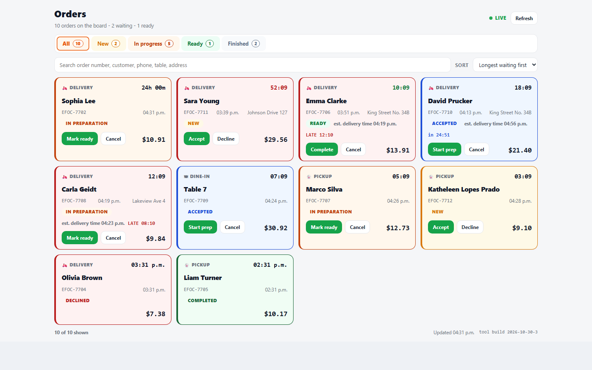
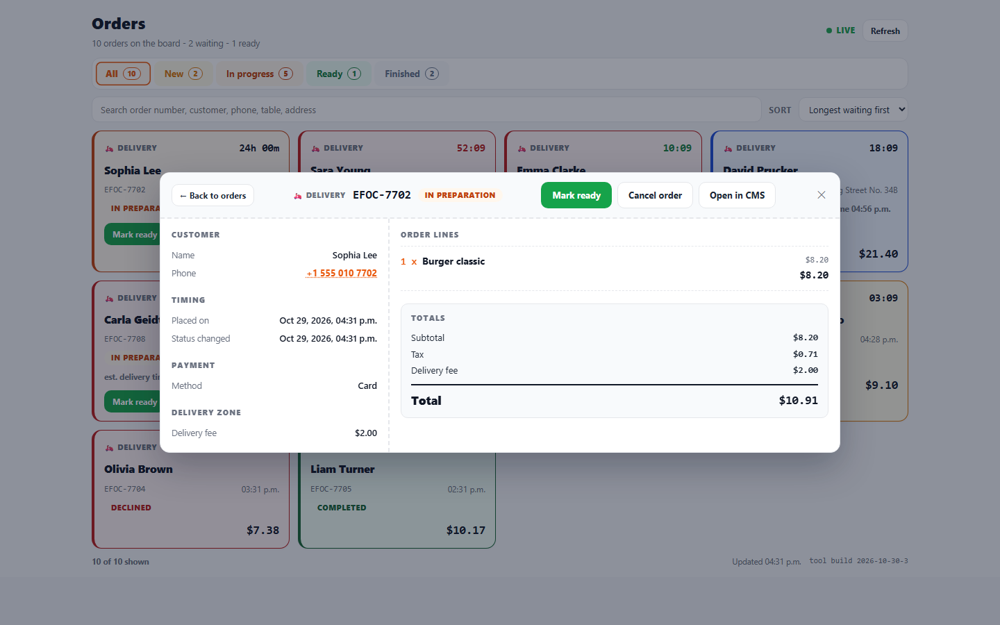
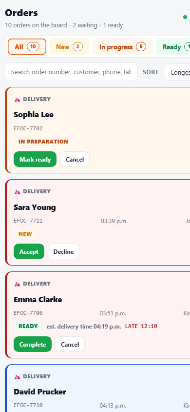

Watch new orders land, accept them with an estimated time, and move each one from the kitchen to the door - one tap per step, no record opening.
Everything the staff needs to take orders through the day - without leaving one screen.
New orders toast and flash the moment they appear; orders waiting too long turn red.
Pick 15-120 minutes or a custom time; the card keeps showing the estimated ready or delivery time.
Accept, start prep, mark ready, complete - the whole journey from the card, no record opening.
Auto refresh on a timer, refresh on tab focus, and a waiting clock ticking every second.
Status changes are editor-gated; decline and cancel need a second confirming tap - no accidents in a rush.
It reads the same restaurant-orders records the checkout writes - nothing to migrate or duplicate.

Tabs with live counts split the day into New, In progress, Ready and Finished. Every card shows the channel, the waiting clock and the total.

Tap any card for the complete order: customer and address, timing, payment, line items with modifiers and instructions, and the totals.

The board is responsive - on a phone by the fryer or a tablet at the counter, the same one-tap flow.
No code, no migration - configuration only.
Add Restaurant Order Taking App to the order application as a listing tool.
Enable Object CRUD and list restaurant-orders in the field settings (scope shared).
The board fills from the same records the checkout writes - accept, prepare, ready, complete.
Against the old way of working in the order application.
| Record by record | Restaurant Order Taking App | |
|---|---|---|
| See all waiting orders | ✕ Open each record one by one | ✓ One board with live tabs and counts |
| Notice a new order | ✕ Nothing signals arrivals | ✓ Toast + flash + auto refresh |
| Accept an order | ✕ Open, edit, save | ✓ Two taps, with an estimated time |
| See how long an order waited | ✕ Compare timestamps by hand | ✓ A ticking clock on every card |
"We stopped losing orders in the rush. The board shows what is waiting, and accept takes two taps."
Kitchen lead, neighborhood pizzeria"The estimated ready time sits on the card, so the riders know exactly when to come back."
Shift manager, delivery kitchen"I watch it on a tablet at the counter. New orders flash and toast - nothing slips past."
Owner, family restaurantYes. It reads the same restaurant-orders records your checkout writes. No data migration and no duplicated store.
Finished orders from yesterday do not clutter the board. Today's finished orders stay visible as the day's history, and any active order still shows - even an old one stuck in preparation - so nothing falls through.
Editors and managers. Viewers can watch the board and search, but their write buttons are hidden.
Browse real screenshots of Restaurant Order Taking App with sample data - click any image to open it full size.
Screenshots show the tool with mock data - the real tool connects to your own account. Get Restaurant Order Taking App
Mount it, grant the order type, and start taking orders the easy way.
Get Restaurant Order Taking App